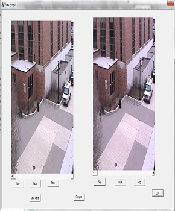

Biography
I'm a student research assistant at the Multimedia Research Center, Shenzhen Institute of Advanced Integrated Technology (SIAT), which is cooperated by Chinese Academy of Sciences and IE department of the Chinese University of Hong Kong. I have been working with great honor under the supervision of Prof. Yu Qiao (Sep. 2012 - present) and Prof. Yali Wang (May 2015 － present). Before coming to Shenzhen, I received my B.E. degree in June 2013, from Software Institute, Nanjing University.Research Interests:
- Computer Vision
- Machine Learning
- Action Recognition
- Image Retrieval
- Multi-task Learning
- Deep Learning
Publications.
Projects.

Video Synopsis
My Contribution:
- User Interface Design
- Development
- System Architecture
Overview:
Proposed objection is to browse and index surveillance video. It provides a short video representation, while preserving the essential activities in the original video. The synopsis video is also an index into the original video by pointing to the original time of each activity.
Year: 2013
Flower Reterieval on Android
My Contribution:
- User Interface design
- Development
Overview:
Proposed objection was to recognize a flower’s name and other images where it appears. It aims to recognize and search a flower from user’s shooting, such as a bunch of magnolia he sees outdoors.
Year: 2012
Women shopping Webpage
My Contribution:
- User Interface Design
- HTML/CSS
- Information Architecture
- Images Editing
- Themes Creator
Overview:
This women shopping is designed for elegant women to enjoy life.